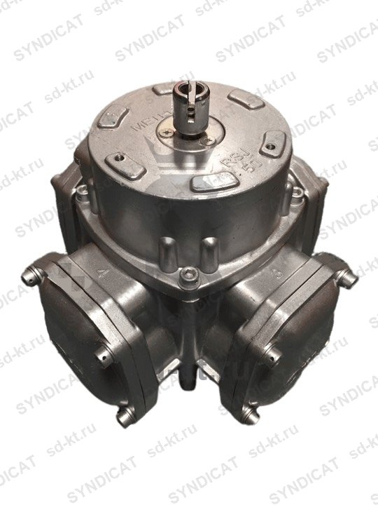

Измеритель объема RSJ-50 (эл. юст)
Артикул: 0172
Топаз-сервис (Волгодонск)
Раздел: Измерители объема · АЗС
Цена и наличие — по запросу. Поставляем оригинал и аналоги. Доставка по России.
Описание
Измеритель объема RSJ-50 (эл. юст) производства Топаз-сервис (Волгодонск) — позиция из раздела «Измерители объема» для АЗС. Компания SYNDICAT поставляет оборудование и комплектующие для автозаправочных и газозаправочных станций по всей России. Цена и наличие «Измеритель объема RSJ-50 (эл. юст)» — по запросу: оставьте заявку или позвоните, подберём оригинал или аналог и рассчитаем доставку.